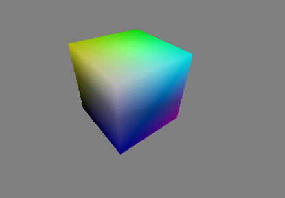

flowvr-render-config.sh from FlowVR's install dir (in
addition to setting up the PYTHONPATH as expained here) .
Example viewers can be found in <flowvr source
dir>/flowvr-render/examples/tutorial. From This directory, run
bash make_app.sh
bin/ subdirectory. To use them:
from flowvrapp import *
from balzac import *
renderer = BalzacLostInSpaceViewer("renderer")
# bin/viewercube is the viewer executable
viewer = Module("viewer", cmdline = "bin/viewercube")
viewer.addPort("scene")
viewer.getPort("scene").link(renderer.new_scene_port())
app.generate_xml("rendertut")
code
Notes:
new_scene_port.
Run the script and the app with:
python render_tut_0.py flowvr rendertutThis should show a graphical window. After moving around dragging with the three mouse buttons, you get something like:

Two other example viewers are available in the tutorial. See the Latex
documentation in the doc/ subdirectory for more
information on the internals of viewer modules.
.so extension) compiled
from the module code.
LostInSpaceViewer.
Portutils defines a way to transmit configuration paramters (called arguments) from FlowvrApp to the Portutils modules. The LostInSpaceViewer contains a separate module, navcomp, to convert key and mouse events into camera motion. The initial position of the camera is an argument of navcomp. We can therefore correct the intial view of the cube in the previous example with:
...
# get the navigation module
navcomp = renderer.navcomp
# list its arguments
print navcomp.args
# get the position parameter
print "position =", navcomp.get_arg('plugins-setcamparams-POSITION')
# change it
navcomp.set_arg('plugins-setcamparams-POSITION', [0, 0, -10])
...
code
from portutils import *
...
viewer = PortModule("tutorial/sceneproducer", "config/multitexture.xml")
...
code
The file config/multitexture.xml contains the reference
to the .so file that defines the module. Several paths
must be updated for the app to work:
export LD_LIBRARY_PATH=$LD_LIBRARY_PATH:lib/ export FLOWVR_DATA_PATH=$FLOWVR_DATA_PATH:data/
The multitexture example shows a wood texture filtered partially
masked out by another one. See comments in
src/multitexture/multitextureViewerPlug.cpp for more info.
In the textureupdate example, a texture cycles though 3 images. The
SyncMaxFrequency ensures that updates do occur at no more
than 4 Hz.
...
viewer = PortModule("tutorial/sceneproducer", "config/textureupdate.xml")
mf = filters.SyncMaxFrequency("maxfreq")
mf.parameters["freq"] = 4
mf.getPort("out").link(viewer.getPort("beginIt"))
viewer.getPort("endIt").link(mf.getPort("endIt"))
...
code